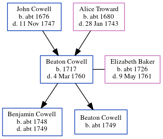

Beaton Cowell 1717 - 1760
[ Home ] | [ Calendar ] | [ Surnames Index ] | [ Errors ] | [ Family History ]The child of John Cowell (a yeoman) and Alice Troward, Beaton Cowell, the six times great-uncle of Nigel Horne, was born in Thanet, Kent, England in 1717, was baptised in Margate, Kent, England on 22 May 1717 and married Elizabeth Baker (with whom he had 2 children: Benjamin and Beaton) at Christ Church Cathedral, Canterbury, Kent, England on 4 Feb 17471.
He died on 4 Mar 1760 in Thanet and was buried at St John the Baptist Church in Margate on 8 Mar 1760 (This tomb is erected in memory of Mrs. Elizabeth Baker, who died the 4th of November 1765 aged 69 years. Here also lies the remains of Mr. Beaton Cowell, who departed this life the 4th of March, 1760, ages 42 years, Also Elizabeth his wife,Daughter of Stephen Baker, jun, who died May 9th, 1761, aged 35 years)2.
Parents
- John was born c. 1676
- Alice was born c. 1680
Children
- Benjamin was born c. 1748
- Beaton was born c. 1749
Citations
- Kent, Canterbury Archdeaconry Marriages - Findmypast
- Kent, Canterbury Archdeaconry Burials - Findmypast
Notes
According to "The Poll for Knights of the Shire to Represent the County of Kent" a Beaton Cowell of Margate was polled to represent Kent in 1754. I wonder if it's the same one?
books.google.com.
Media
Canterbury Burials Transcription - GBPRS-CANT-D-95159570
Canterbury Baptisms Transcription - GBPRS-CANT-B-96739553
Canterbury Burials Transcription - GBPRS-CANT-D-95557037
England, Births & Baptisms 1538-1975 Transcription - R_885512749
England, Births & Baptisms 1538-1975 Transcription - R_885861938
England, Births & Baptisms 1538-1975 Transcription - R_883176074
Canterbury Marriages - GBPRS/CANT/M/97153612/1
England Marriages 1538-1973 - R_22085684469
Boyd's 1st Misc - GBPRS/M/710175891/1
Kent, East Kent marriage index 1538-1754 Transcription - GBPRS-EASTKENT-MAR-165042-1
England Deaths and Burials 1538-1991 Transcription - R_277278400
England Deaths and Burials 1538-1991 Transcription - R_277517156
Canterbury Baptisms Transcription - GBPRS-CANT-B-96203730
Britain, marriage licences - GBPRS/COA/MARRLICENCE/00150918/1
Family Tree
Map
Generated by ged2site. Last updated on Jul 3, 2024
Known Issues
Birth date (1717) has no citations
Death date (4 Mar 1760) has no citations
Date of baptism (22 May 1717) before date of birth (1717)